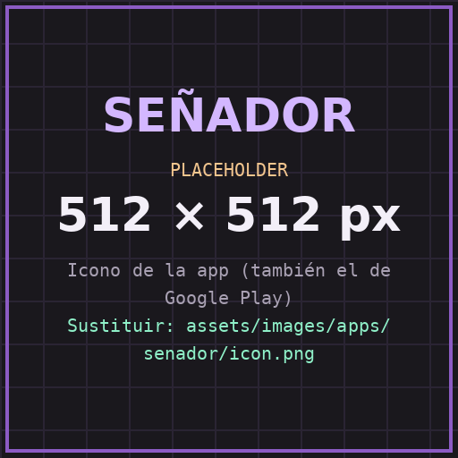
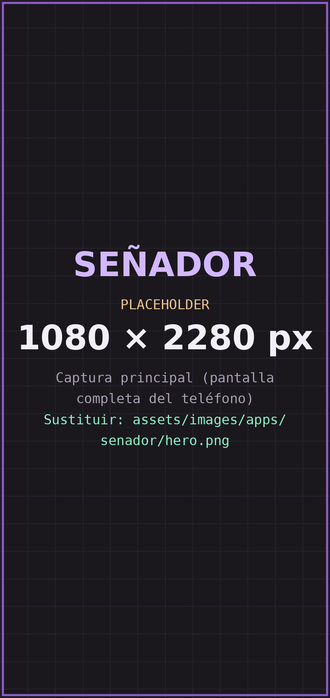
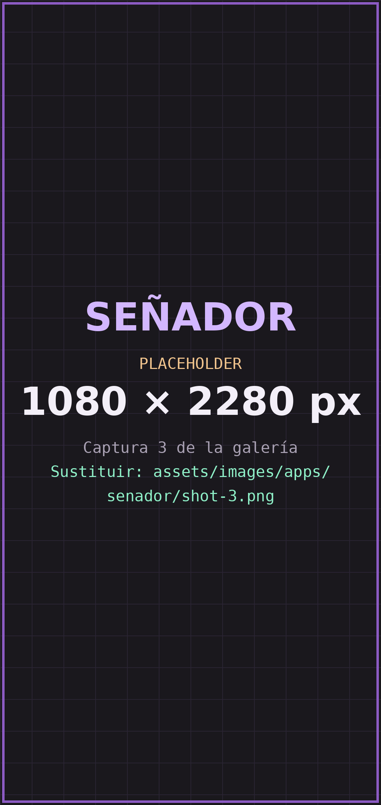
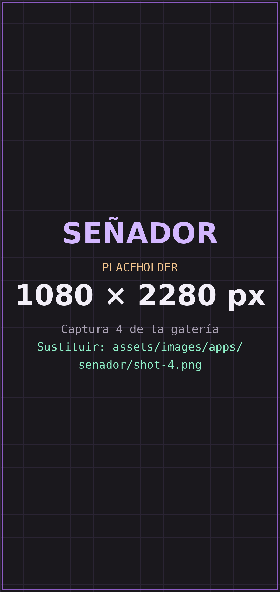

Aprendizaje de LSM
Practica vocabulario y configuraciones de señas a tu ritmo, con una herramienta pensada como apoyo al estudio.

ANDROID · ACCESIBILIDAD
Una aplicación para aprender y reconocer la Lengua de Señas Mexicana (LSM) con ayuda de la cámara. Pensada para todas las edades y para acercar la comunicación entre personas sordas y oyentes.
Aún no está en Google Play. Esta página se actualizará con el enlace de descarga.

CÓMO FUNCIONA
Así está pensado Señador. La demostración es ilustrativa: el reconocimiento automático puede equivocarse.
Avanza sola; toca un paso (o la escena) para saltar. La seña y el resultado son un ejemplo ilustrativo.
FUNCIONES
Practica vocabulario y configuraciones de señas a tu ritmo, con una herramienta pensada como apoyo al estudio.
Analiza señas y movimientos de las manos. Es un resultado automático que puede requerir confirmación.
Elige tú qué videos o fotografías quieres usar para traducir; la aplicación no decide por ti.
Guarda señas, ejemplos y configuraciones creadas por ti para usarlas cuando las necesites.
Exporta e intercambia bibliotecas o modelos con otras personas, asumiendo tener derecho a compartir su contenido.
Las señas cambian según región y comunidad. Señador no presenta una única interpretación como universal.
CAPTURAS
Imágenes ilustrativas: la interfaz final puede cambiar hasta la publicación.


PRIVACIDAD
La cámara es el centro de la app, así que lo explicamos con claridad. El detalle completo está en la política de privacidad.
Leer la política de privacidad ↗PREGUNTAS FRECUENTES
No. Las traducciones son resultados automáticos y no reemplazan a un intérprete humano certificado ni el conocimiento contextual de la lengua. No las uses como único medio en situaciones importantes o críticas.
No. No todas las señas, variantes regionales o movimientos pueden reconocerse correctamente, y la LSM cambia entre regiones, comunidades y personas.
Se analizan para reconocer señas. En el funcionamiento previsto, el análisis se hace en tu dispositivo y las imágenes no se envían a servidores del desarrollador. La política de privacidad lo explica con detalle, incluso cuando algo no se guarda.
Señador está pensada para todas las edades. Recomendamos que las personas menores la usen con acompañamiento de una persona adulta, sobre todo al usar la cámara o compartir contenido.
Sí, pero eres responsable de tener derecho a compartir los videos, fotografías o materiales que incluyas.
DISPONIBILIDAD
Señador está en desarrollo. Cuando esté lista, estará disponible para Android en Google Play.
¿Dudas o comentarios? Escribe a angeldanielcjaramillo@gmail.com.
INFORMACIÓN Y CONDICIONES
Documentación específica de Señador, más las condiciones que comparten todas las aplicaciones de Daniel C. Studio.
Otras apps: StringTuneRitmmo